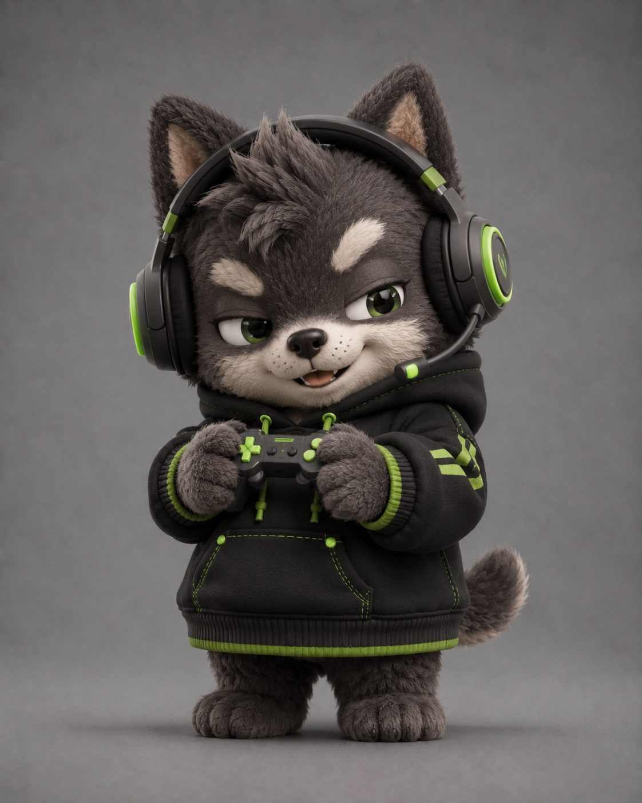

¿Que es una blind box?
Una blind box es una caja cerrada cuyo personaje no se conoce antes de abrirla. Las figuras pertenecen a una misma coleccion, pero el modelo recibido es sorpresa.
Esta idea convierte la apertura en un pequeno momento de emocion. Tambien anima a coleccionar personajes y a intercambiar repetidos con otras personas.
Volver al blog